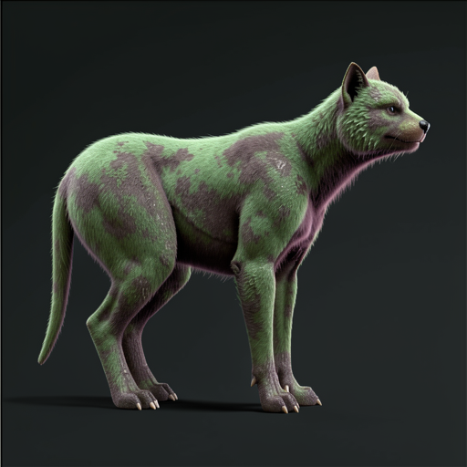
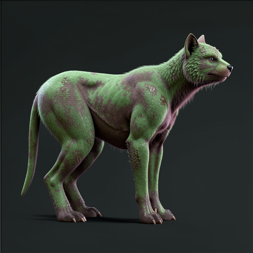
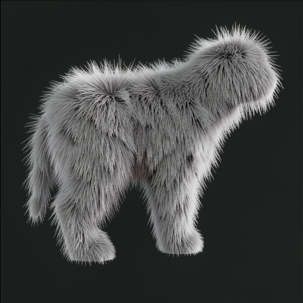

Latest-envelope authority probe
Revision 029 versus the matched revision-025 predecessor at seed 80413, followed by a separate fur-representation probe. Source, wording, settings, and output remain adjacent.

Object Cube.056; 2,465 evaluated triangles.
mannequin-seed80413
Elaborate this mannequin into a finished creature.
FLUX.2 Klein 9B q4
seed 80413 · 8 steps · guidance 1.0
512 × 512
seed 80413 · 8 steps · guidance 1.0
512 × 512
Safe positive: same seed basin, with a rounder hindquarter, tighter trunk, cleaner forequarter, and more feline head-neck relation.

Candidate-specific local authority gain; no categorical cat claim.

Same source-plate recipe.
Matched predecessor
Elaborate this mannequin into a finished creature.
FLUX.2 Klein 9B q4
seed 80413 · 8 steps · guidance 1.0
512 × 512
seed 80413 · 8 steps · guidance 1.0
512 × 512
The comparison isolates authored source revision while holding prompt, seed, route, and framing recipe fixed.

The known seed-80413 green fox/wolf basin.
Same source and seed; prompt is the only changed control.
tufted-coat-seed80413
This shape covered in broad layered fur tufts.
FLUX.2 Klein 9B q4
seed 80413 · 8 steps · guidance 1.0
512 × 512
seed 80413 · 8 steps · guidance 1.0
512 × 512
Safe negative: dense shaggy shell, lost face and distal anatomy, no broad separated meso-scale clumps. Do not send to TRELLIS.

Representation-targeted wording overpowered source morphology.